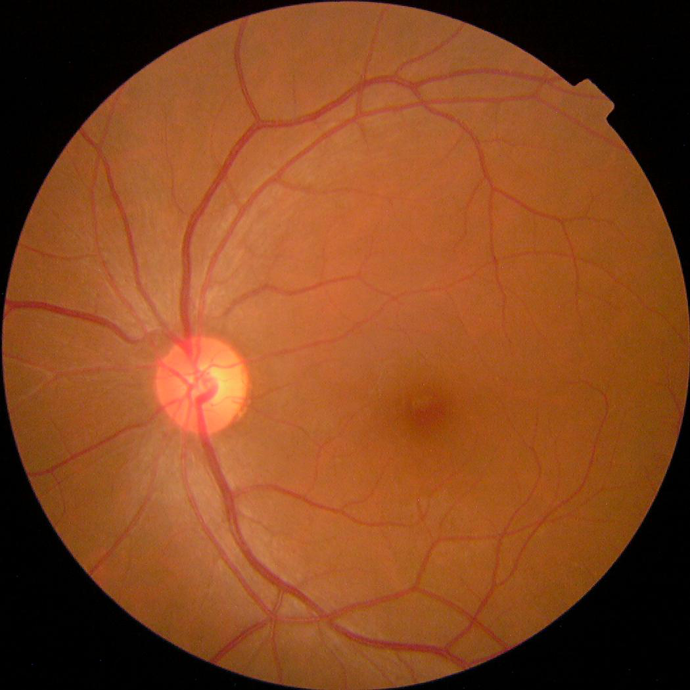
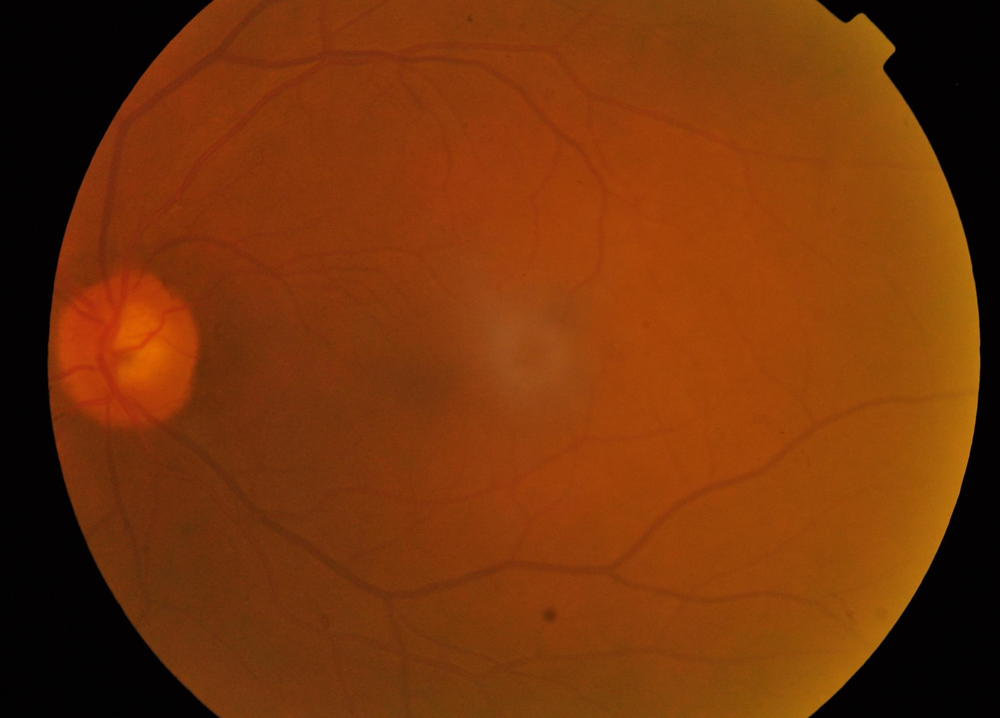
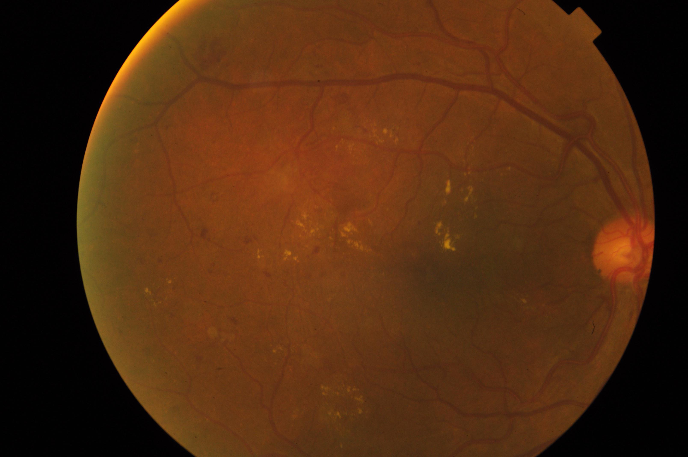
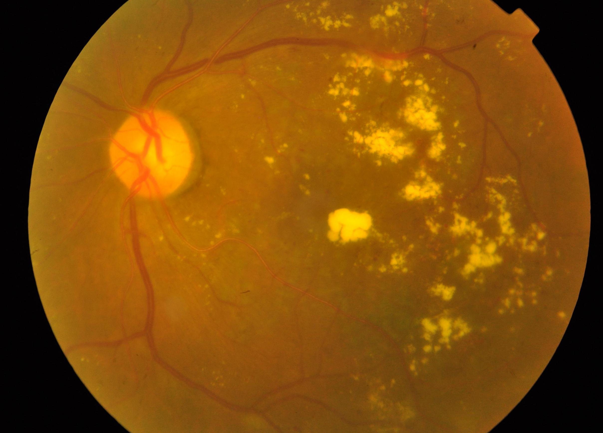
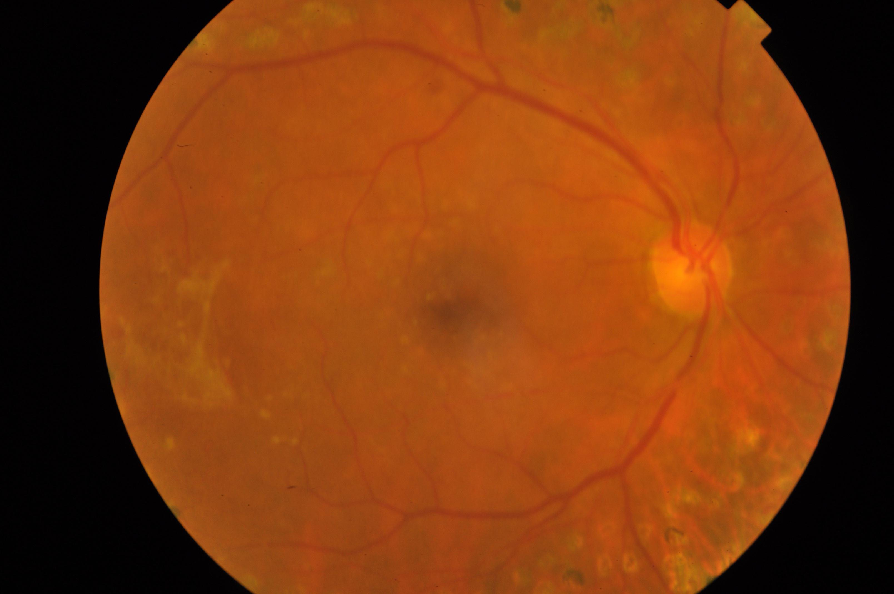

Explainable AI for Diabetic Retinopathy Screening in Rural Areas
A clear, responsible guide to diabetic retinopathy, retinal screening grades, healthy habits, and the role of AI as screening support.
◎
WHAT IS DIABETIC RETINOPATHY?
Protecting the retina from diabetes-related damage
Diabetic retinopathy is an eye condition caused by damage to the blood vessels in the retina due to diabetes. It can gradually affect vision and may lead to severe vision loss if not identified and managed in time.
WHY EARLY SCREENING MATTERS
Early changes may not cause symptoms
Many people with diabetes may not notice eye damage during the early stages. Regular retinal examinations can help identify possible problems before serious vision loss occurs.
OUR MISSION
Support care where access is limited
Our goal is to support early screening, assist healthcare workers in rural and underserved areas, and help identify patients who may need further examination by an eye-care professional.
HOW THE SYSTEM WORKS
The current screening workflow
A retinal fundus image is uploaded.
The system checks basic image requirements and processes the image.
The AI model predicts a diabetic retinopathy severity grade from 0 to 4.
The result and available Grad-CAM explanation are presented for review.
Patients who may be at risk are advised to seek professional eye-care assessment.
DIABETIC RETINOPATHY GRADES
Understanding Grades 0–4
The cards provide general education. They do not diagnose an individual or replace an ophthalmologist's examination.

Grade 0 example from the project's labelled retinal training dataset.
0 NO APPARENT DIABETIC RETINOPATHY
No visible signs detected in the image
No visible signs of diabetic retinopathy may be detected in the retinal image.
What may be seen
A complete clinical examination may show no apparent diabetic changes. Disease can still develop, and an image or AI prediction cannot assess the whole eye.
Symptoms and next steps
Early disease often causes no symptoms. Maintain regular diabetic eye examinations and follow the schedule advised by a qualified eye-care professional.
Daily health guidance
Keep blood sugar and blood pressure within targets advised by your healthcare professional. Follow a balanced diet, remain physically active when medically suitable, avoid smoking, and take prescribed medicines as directed.
A Grade 0 prediction does not guarantee that the eyes are healthy or that future disease cannot develop.

Grade 1 example from the project's labelled retinal training dataset.
1 MILD NPDR
Mild non-proliferative diabetic retinopathy
Mild disease may show small retinal changes, particularly microaneurysms, which are tiny bulges in retinal blood vessels.
Symptoms and follow-up
Vision may remain normal, especially in early disease. Regular eye examinations remain important because changes can progress before symptoms appear.
Health guidance
Manage blood glucose, blood pressure, and cholesterol as advised by a healthcare professional. Eat a varied balanced diet and follow suitable physical activity guidance.
No particular food, supplement, or home remedy has been shown to reverse retinal damage. Follow the eye-care professional's review schedule.

Grade 2 example from the project's labelled retinal training dataset.
2 MODERATE NPDR
Moderate non-proliferative diabetic retinopathy
Moderate disease may involve more retinal blood vessel abnormalities, including microaneurysms, haemorrhages, and other changes.
Symptoms and follow-up
Some people still have no noticeable symptoms. An eye-care professional should determine the examination schedule and whether further tests or treatment are needed.
Health guidance
Continue medically appropriate diabetes management, balanced eating, physical activity, smoking avoidance, and regular monitoring. Dietary changes support general health but cannot cure existing eye disease.
Seek prompt professional assessment if vision changes, even if an earlier image showed a lower grade.

Grade 3 example from the project's labelled retinal training dataset.
3 SEVERE NPDR
Severe non-proliferative diabetic retinopathy
Severe disease involves extensive retinal blood vessel abnormalities and may progress to more advanced disease.
Symptoms and specialist care
Vision may seem unchanged or may become affected. Prompt assessment by an ophthalmologist is important for closer monitoring and an individualized treatment plan.
Health guidance
Keep diabetes, blood pressure, and cholesterol care under professional supervision. Healthy habits support overall health but do not replace specialist examination or treatment.
The ophthalmologist decides whether closer monitoring or treatment is necessary. Surgery is not automatically required.

Grade 4 example from the project's labelled retinal training dataset.
4 PROLIFERATIVE DIABETIC RETINOPATHY
Advanced, sight-threatening disease
This advanced stage involves abnormal new blood vessels in the retina. These vessels may bleed and can lead to serious complications, including retinal detachment.
Urgent specialist assessment
Seek prompt assessment by a qualified ophthalmologist or retinal specialist. Sudden vision loss, a sudden increase in floaters, flashes of light, or a curtain-like shadow requires urgent eye-care assessment.
Possible treatments
Depending on the complete clinical examination, treatment may include laser treatment, anti-VEGF injections, or surgery such as vitrectomy.
Not every Grade 4 patient requires surgery. A qualified eye specialist must choose treatment after examining the patient.
PREVENTION AND DAILY CARE
Healthy Habits for Protecting Your Eyes
Keep blood glucose within the target range advised by a healthcare professional.
Monitor blood pressure and cholesterol.
Eat a balanced diet with vegetables, fruits in appropriate portions, whole grains, pulses, and other nutritious foods.
Follow an appropriate exercise routine if medically suitable.
Avoid smoking.
Attend regular diabetic retinal examinations.
Take prescribed medicines as directed by a healthcare professional.
EXPLAINABLE AI
How AI Helps in Retinal Screening
1 · IMAGE ANALYSIS
An AI model analyzes a retinal image and predicts one of five severity grades, from 0 to 4.
2 · HEATMAP EXPLANATION
When supported by the current implementation, Grad-CAM may highlight image regions that influenced the model's prediction.
3 · CLINICAL LIMIT
A heatmap does not prove a lesion is present, and the AI prediction is not always correct.
Screening-support prototype: This project is not a replacement for a qualified ophthalmologist or a confirmed clinical diagnosis. Results should be interpreted by a healthcare professional.